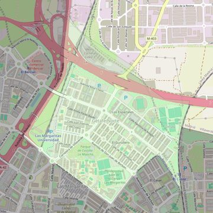

San Pablo
- Arciprestazgo
- Getafe
- Población
- Getafe
- Dirección postal
- Avda. Rigoberta Menchú, 6
- Código postal
- 28903
- Extensión
- 2,03 km² (203 ha)
- Teléfono
- 916 950 399
- Correo electrónico
- sanpablo-getafe@diocesisgetafe.es
- Información demográfica
- De la parroquia · De la población (Getafe) · Del arciprestazgo (Getafe)


Descargar mapaLímites según decreto
“Partiendo de la confluencia de la carretera N-401 (Madrid-Toledo) con la Avenida de Las Ciudades, arrancan por el eje de la Avenida de Las Ciudades (en dirección sureste); continúan por el eje de la prolongación de la Avenida de España (en dirección norte), por el eje de la Avenida de La Rabia (en dirección noreste), por el eje de la Avenida El Casar (en dirección sureste), por una línea recta imaginaria hasta el ferrocarril Madrid-Alicante-Cádiz (en dirección este), por el eje de las vías de dicho ferrocarril (en dirección noroeste), por los límites de los términos municipales de Madrid y Getafe (en dirección noroeste) y por el eje de la carretera N-401 (en dirección suroeste) hasta la confluencia con la Avenida de Las Ciudades, punto de partida". (Decreto de rectificación de límites de 16-7-99, B-O. Oct-99, págs. 837-838)